Lecture 02 — Enzymes and Enzyme Kinetics
VS boxes = pairs that are routinely confused; the underlined red word is the single feature that tells them apart.
Orientation / How this lecture fits together
The one thing an enzyme is allowed to do
Start from a constraint rather than a definition, because the constraint is what makes the rest of the lecture predictable. A chemical reaction has a starting point and a finishing point, and the energy difference between them is fixed by what the molecules are. Nothing an enzyme does can alter that difference. Between those two fixed points, though, the molecules have to climb over an energy hill, and how high that hill is decides how many molecules make it across per second. An enzyme carves a lower path over the hill. That is the entire scope of its power.
Everything downstream follows. Because an enzyme can only affect the climb and never the endpoints, it can change how fast a reaction reaches equilibrium but never where equilibrium lies. And because its whole effect is on rate, the useful description of an enzyme is a description of its rate — which turns out to need exactly two numbers.
Two numbers, and five ways to move them
Push substrate at an enzyme and the rate climbs, then flattens, because there are only so many enzyme molecules to do the work. That curve is pinned down by two quantities: the height of the plateau (Vmax) and how much substrate it takes to get halfway up (Km). Every remaining topic in this lecture is something that moves one of those two numbers, moves the other, or moves neither — and knowing which is usually the whole exam question.
The five objectives are a chain, not a list. Objective 1 establishes what an enzyme is made of and how the clinic uses that fact. Objective 2 gives the two numbers and the algebra behind them. Objective 3 walks the five things that perturb them. Objective 4 takes the perturbation you will be tested on hardest — inhibitors — and separates three types by which number each moves. Objective 5 handles the minority of enzymes whose curve is not a hyperbola at all, and which therefore need a different vocabulary. If you can look at any curve in this lecture and say which of the two numbers changed, you have the lecture.
Objective 1 / Terms, classes of enzymes, and the clinical uses of enzymes
What an enzyme is
An enzyme is a biocatalyst: it speeds a chemical reaction and emerges unchanged, converting substrate to product at a defined rate per unit time. Enzymes are protein, with one exception — ribozymes, which are catalytic RNA. Beyond raw speed they supply specificity and a handle for regulatory control, and they are extraordinarily efficient, running reactions 103–108 times faster than the uncatalyzed route.
Catalysis takes place in the active site, a pocket created when the protein folds, lined with side chains that both bind substrate and do chemistry. Binding is not passive: substrate induces a conformational change that closes the site around it and aligns the catalytic groups — induced fit, which replaced the older rigid lock-and-key picture. The enzyme–substrate complex converts to an enzyme–product complex and dissociates. Induced fit also explains specificity better than a rigid template does: a molecule that merely fits the empty pocket will not necessarily trigger the closure that assembles the catalytic machinery, so an enzyme can bind several things and productively catalyze only one.
The non-protein partners
Many enzymes cannot work as bare protein. Which partner an enzyme needs, and how tightly it holds on to it, generates three pairs of terms that are routinely swapped for one another.
| ApoenzymeThe protein portion by itself. Inactive. | HoloenzymeApoenzyme plus its non-protein part. The catalytically competent form. |
| CofactorAn inorganic non-protein part — a metal ion. An enzyme requiring one is a metalloenzyme: carbonic anhydrase needs Zn2+, lysyl oxidase needs Cu2+. Also Fe2+, Mg2+. | CoenzymeAn organic non-protein molecule, usually derived from a vitamin. Splits further into cosubstrates and prosthetic groups. |
| CosubstrateA coenzyme that associates transiently and dissociates in an altered state — it has to be reconverted elsewhere. NAD+ (from niacin, B3), coenzyme A (pantothenate). | Prosthetic groupA coenzyme permanently associated with its enzyme, returned to its original state on the enzyme before it lets go. FAD (from riboflavin, B2), biotin. |
The cosubstrate/prosthetic distinction has a consequence worth seeing. A cosubstrate leaves changed, so it must be regenerated somewhere else in the cell before it can serve again — which is why NADH has to be reoxidized at the electron transport chain for glycolysis to keep running. A prosthetic group is restored on the enzyme within the same catalytic cycle, so it never leaves and never needs a separate recycling pathway. This is also why a deficiency of the parent vitamin bites: the enzyme protein is present and correctly folded, but as apoenzyme it is inert.
How an enzyme accelerates a reaction
Every reaction is separated from its products by an energy barrier: reactants must pass through a high-energy intermediate, the transition state (T*), and the gap between reactants and that intermediate is the free energy of activation (Ea, ΔG‡). The barrier is what makes uncatalyzed reactions slow — at any moment only a small fraction of molecules carry enough energy to clear it, and the rate is set by how many do.
The mechanism of the speed-up is worth being precise about, because it is not that the enzyme pushes the substrate uphill. The active site is shaped to fit the transition state more snugly than it fits the substrate. Binding releases energy, and because the tightest binding happens at the top of the climb, that release is subtracted precisely where the barrier is highest. The peak comes down; the reactant and product levels do not move. A far larger fraction of molecules can now cross, and the reaction runs fast under the mild conditions of the cell.
The same picture explains why the endpoints are untouchable. Free energy is a property of the molecules themselves — where they start and where they finish — not of the route taken between them. The enzyme is neither reactant nor product; it binds, works, and lets go unchanged. It has carved a lower pass through the mountain range without moving either valley.
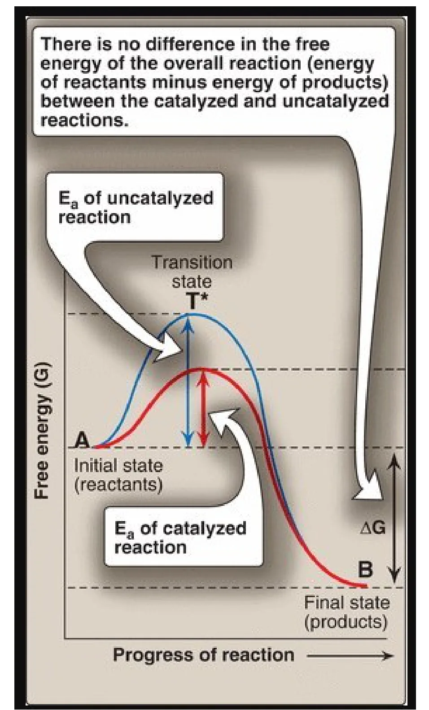
The six classes of enzymes
Every enzyme carries an EC number whose first digit is one of six reaction types. The numbering is fixed and is examined in that order, so learn the sequence, not just the six words.
| EC | Class | Reaction catalyzed | Example |
|---|---|---|---|
| 1 | Oxidoreductase | Oxidation–reduction: one substrate is oxidized, another reduced | Lactate dehydrogenase |
| ★ 2 | Transferase | Transfer of a functional group — C-, N- or P-containing — from one molecule to another. Every kinase is a transferase: it moves the phosphoryl group of ATP itself, which is not the same as using ATP as an energy source | Hexokinase; serine hydroxymethyltransferase |
| 3 | Hydrolase | Cleavage of a bond by adding water | Urease |
| 4 | Lyase | Cleavage of C–C, C–S or C–N bonds without water, often leaving a double bond | Pyruvate decarboxylase |
| 5 | Isomerase | Rearrangement of atoms within one molecule to give an isomer | Methylmalonyl-CoA mutase |
| 6 | Ligase | Joins two molecules into one, paid for by hydrolysis of a high-energy phosphate | Pyruvate carboxylase |
The kinase-versus-ligase trap is worth understanding rather than memorizing. Look at what happens to the ATP. A kinase takes the terminal phosphoryl group off ATP and hands it to the substrate, so the phosphate ends up in the product — that is a group transfer, and the ATP was the donor. A ligase hydrolyzes ATP purely to pay the energetic bill for stitching two molecules together, and the phosphate leaves as Pi rather than joining the product. Ask where the phosphate went and the class answers itself.
Enzymes as markers of tissue damage
Enzymes are concentrated inside cells and have no job in plasma. The small amounts normally there arrive from ordinary cell turnover, with release balancing clearance, so levels sit inside a narrow reference range. Infection, toxins, poisons or trauma breach the membrane and spill the contents, and the degree of elevation tracks the extent of the damage. What limits the method is specificity: an enzyme found in many tissues tells you something was injured but not what.
| Enzyme | Principal diagnostic use |
|---|---|
| Alanine aminotransferase (ALT / SGPT) | Liver. Abundant in and most specific to hepatocytes; part of the liver function panel — viral hepatitis, toxic hepatic injury |
| Aspartate aminotransferase (AST / SGOT) | Liver, heart, skeletal muscle — a wide distribution, so less specific than ALT |
| Amylase · Lipase | Acute pancreatitis |
| Creatine kinase (CK) | Muscle disorders and myocardial infarction |
| Lactate dehydrogenase (LDH) | Myocardial infarction; also hepatic injury |
| γ-Glutamyl transpeptidase (GGT) | Various liver diseases |
| Ceruloplasmin | Wilson disease (hepatolenticular degeneration) |
| Acid phosphatase | Metastatic carcinoma of the prostate |
| Alkaline phosphatase | Bone disorders; obstructive liver disease |
A rise in ALT together with bilirubin indicates hepatocellular jaundice: hepatocytes are being destroyed and the surviving liver can no longer clear bilirubin. Mushroom poisoning produces exactly this pattern.
The two findings are doing different jobs. The enzyme rise says cells are dying; the bilirubin rise says the organ has lost enough function that a routine task is no longer being done. Damage alone can be trivial, and impaired function alone can arise from obstruction downstream of healthy hepatocytes — it is the combination that localizes the problem to the liver cells themselves.
Isoenzymes
Isoenzymes (isozymes) are physically distinct forms of an enzyme that catalyze the same reaction. Their amino acid sequences differ, so they carry different numbers of charged residues and can be pulled apart by electrophoresis — all of them net negative, so all migrate toward the anode (+), just at different speeds. Because organs contain characteristic proportions of each form, the pattern in serum localizes the damage rather than merely reporting it.
The numbering is combinatorial, which makes it far easier to reconstruct than to memorize. Both of these enzymes are assembled from two kinds of subunit. CK is a dimer, so two positions filled from two subunit types give three possible molecules. LDH is a tetramer, so four positions filled from two types give five. The forms are then numbered in order of electrophoretic mobility, fastest first — which is why LDH-1 is the all-H form and LDH-5 the all-M form, with the mixed species falling in between in strict order.
| Isoenzyme | Subunits | Predominant tissue |
|---|---|---|
| CK-1 | BB | Brain |
| CK-2 | MB | Cardiac muscle — the only tissue carrying more than 5% of its total CK as MB, which is what makes a rise in the MB fraction over total CK virtually specific for myocardial infarction |
| CK-3 | MM | Skeletal muscle |
| LDH-1 | HHHH | Heart |
| LDH-2 | HHHM | The predominant form in normal serum |
| LDH-3 | HHMM | — |
| LDH-4 | HMMM | — |
| LDH-5 | MMMM | Liver — rises in acute hepatitis |
Normal serum runs LDH-2 > LDH-1. Myocardial infarction flips that order to LDH-1 > LDH-2, and the flip, not the absolute value, is the finding. Reading a ratio rather than a level is deliberate: absolute enzyme levels vary with muscle mass, hydration and how long ago the event happened, whereas the ratio between two forms released from the same organ does not. One artefact ruins the test: red cells are full of LDH, so a haemolysed sample reads falsely high and blood must be handled gently.
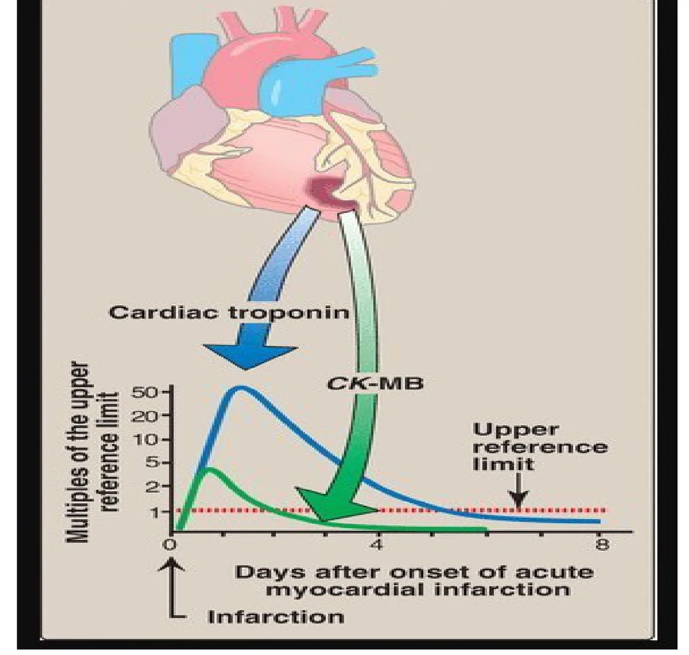
Objective 2 / Michaelis-Menten kinetics; Km and Vmax
The model
The accepted account of catalysis is the Michaelis-Menten model: enzyme and substrate combine reversibly into an ES complex, which then breaks down to free enzyme and product.
Velocity is directly proportional to [ES], so anything that raises or lowers the amount of ES changes the rate. Read the Km expression as a ratio of ways of losing ES over ways of making ES: k2 and k3 both empty the complex, k1 fills it. An enzyme with a large numerator sheds substrate faster than it captures it, and therefore needs a lot of substrate in the surroundings to stay occupied — a large Km. That is the whole origin of the inverse relationship between Km and affinity, and it is why the constant behaves like a concentration rather than a rate.
Three assumptions make the model work. Substrate is in large excess over enzyme, so only a small fraction of it is bound at any time and [S] can be treated as constant during a measurement. The system is at steady state — ES is formed as fast as it breaks down, so [ES] does not change with time, which is what allows the algebra to solve for it. And measurements are taken as initial velocities (vo), the instant enzyme and substrate are mixed, when almost no product exists: the reverse reaction can be ignored and there is no product inhibition.
The equation encodes the shape you would predict from first principles. A cell has a fixed number of active sites. When substrate is scarce, nearly every site is free, so each additional substrate molecule finds a partner and the rate climbs in step with supply. As sites fill, each new molecule has fewer vacancies to find, so the return on adding more substrate shrinks. When every site is occupied the enzyme is working flat out and further substrate changes nothing. Steep, then bending, then flat — a rectangular hyperbola.
What the two parameters mean
| Km — the Michaelis constantThe substrate concentration at which v = ½Vmax. It is measured in units of concentration (mM). | Vmax — the maximal velocityThe velocity reached when every active site is occupied — saturation. Measured as product formed per unit time. |
| Measures the enzyme's affinity for that substrate, and does so inversely: low Km = high affinity, high Km = low affinity. A low Km means very little substrate suffices to half-saturate the enzyme. | Measures catalytic capacity: Vmax = kcat × [Et]. |
| Does not vary with enzyme concentration. It is a constant of one enzyme with one substrate, and reflects that enzyme's natural substrate. | Directly proportional to enzyme concentration — halve the enzyme and Vmax halves. It is the only one of the two that the amount of enzyme can move. |
Why one parameter tracks the amount of enzyme and the other ignores it is a question worth being able to answer, because exam items lean on it. Vmax is a total throughput — the number of working molecules multiplied by the speed of each — so doubling the molecules doubles the total. Km is a statement about a single enzyme molecule's behaviour towards its substrate: it comes entirely from the three rate constants, which describe one binding event. Adding more copies of the same molecule cannot change how any one of them behaves.
Getting the numbers off a graph
A Michaelis-Menten plot approaches Vmax asymptotically, so the curve never visibly arrives, and if you cannot locate the plateau you cannot locate half of it either — both parameters become guesses. Plotting the reciprocals, 1/vo against 1/[S], fixes this by straightening the curve into a line that can be extrapolated back: the Lineweaver-Burk or double-reciprocal plot.
The straightening is pure algebra. Invert both sides of the Michaelis-Menten equation and split the numerator, and you get 1/v = (Km/Vmax)(1/[S]) + 1/Vmax, which is y = mx + c with 1/[S] as x. A straight line needs only two well-measured points and can be extended off the graph to where the axes are crossed, so the plateau you could never reach experimentally is now read off an intercept. The price is that reciprocals magnify error, and worst at low [S], where 1/[S] is largest — a small measurement error there swings the line and with it both constants.
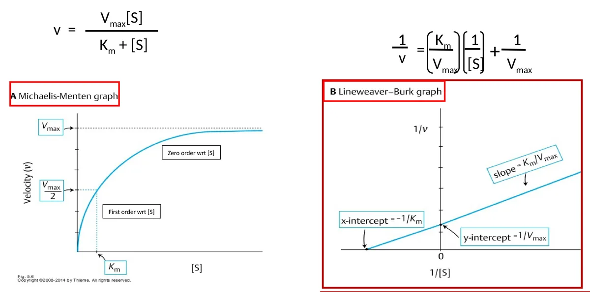
The other kinetic parameters
| Parameter | Definition |
|---|---|
| kcat — the turnover number | Moles of product formed per second per mole of catalytic centre. A property of the enzyme molecule itself, independent of how much of it is present |
| Unit of enzyme activity | The amount of enzyme producing a stated quantity of product per unit time, e.g. µmol product/min |
| Specific activity | Units per mg of protein. Because enzymes are protein, this rises as a preparation is purified and is used as a measure of purity |
Specific activity works as a purity measure because of what its two halves count. The numerator counts only the enzyme you care about, since only that enzyme produces the product being assayed. The denominator counts all protein in the tube. Strip away contaminating protein and the denominator falls while the numerator holds, so the ratio climbs — and it stops climbing when nothing but the enzyme is left.
Objective 3 / Factors that affect enzyme activity
Five things change the velocity of an enzyme-catalyzed reaction. Each has a characteristic plot, and recognizing the plot shape is usually the whole question — check the axes first, then the shape, then what moved.
| Factor | Shape of the v plot | What is happening |
|---|---|---|
| Substrate concentration | Hyperbolic | Velocity climbs with [S] until every binding site is occupied; the plateau is saturation |
| Enzyme concentration | Straight line through the origin | No plateau, because with substrate unlimited nothing caps the enzyme. This is the property exploited to measure how much of an enzyme is present in plasma, serum or tissue |
| Temperature | Bell curve | Rises as more molecules clear the energy barrier, peaks at the optimum, then collapses as heat denatures the protein |
| pH | Bell curve | Shifts the ionic charge on the side chains that bind substrate and perform catalysis; extremes of pH denature the enzyme outright |
| Activators and inhibitors | Curve shifts position | Objectives 4 and 5 |
The two shapes in that table are not arbitrary, and the contrast between the first two rows is the one to hold on to. Substrate saturates because the enzyme is the scarce resource: there is a fixed number of sites and once they are full, nothing more can happen. Turn the experiment around and add enzyme to a substrate pool so large it cannot be depleted, and now nothing is scarce — each enzyme molecule works at the same rate as every other, so total velocity is simply rate-per-molecule multiplied by the number of molecules. A quantity with no ceiling plots as a straight line through the origin, and that proportionality is precisely what lets a laboratory convert a measured rate into an amount of enzyme in a patient's serum.
Substrate concentration: the order of the reaction
Where an enzyme sits on its hyperbola relative to Km decides whether its rate tracks substrate supply or ignores it — and physiologically that is a design choice, made differently in different tissues.
| First order with respect to [S]Holds when [S] ≪ Km, the steep early part of the curve. | Zero order with respect to [S]Holds when [S] ≫ Km, the plateau. |
| Km + [S] ≈ Km, so the equation reduces to v = Vmax[S]/Km. | Km + [S] ≈ [S], so [S] cancels and the equation reduces to v = Vmax. |
| Velocity is proportional to substrate concentration — supply more substrate and the rate rises with it. | Velocity is independent of substrate concentration — the enzyme is saturated and more substrate achieves nothing. |
| The transporter parallel: GLUT2, in liver and pancreas, moves glucose in proportion to how much is there. | The transporter parallel: GLUT1 and GLUT3, in brain and red cells, move glucose at a constant rate whatever the blood level. |
Both simplifications come from the same move: one of the two terms in the denominator is so much larger than the other that the smaller can be dropped. Which term survives is what sets the behaviour. Between the two regions, around [S] ≈ Km, neither term dominates, nothing can be dropped, and the reaction is mixed order — partly but not fully responsive to substrate.
The physiological payoff is that an enzyme's Km relative to the concentration it normally sees is a design decision about whether a tissue should respond to fluctuations or be insulated from them. Build the enzyme to sit in the zero-order region and the tissue is insulated; build it to sit in the first-order region and the tissue tracks supply. The next section is that choice made twice, for two organs, with two versions of one enzyme.
Two kinases, two different Km values, two different jobs
Both enzymes catalyze the identical reaction — glucose + ATP → glucose-6-phosphate + ADP — which traps glucose inside the cell by putting a charge on it and commits it to metabolism. They differ only in their kinetic constants, and that difference is enough to give the liver and the brain opposite behaviour on the same blood glucose.
| Hexokinase — the high-affinity enzymeLow Km (≈0.05 mM) and low Vmax. Present in most tissues, notably brain and red cells, which are supplied by GLUT1 and GLUT3. | Glucokinase — the high-capacity enzymeHigh Km (≈10 mM) and high Vmax. Present in the liver and the islet cells of the pancreas, supplied by GLUT2. |
| The low Km lets it capture glucose efficiently even when blood glucose is low, which is what keeps brain and red cells — tissues that can never be without glucose — supplied during fasting. The low Vmax caps how much it can phosphorylate. | The high Vmax lets it phosphorylate glucose in bulk after a meal, when portal glucose is high, which is what the liver needs as the chief site of metabolism. |
Notice that the two constants are doing separate jobs in each enzyme, and that the pairing is not accidental. A low Km guarantees a tissue gets served first when glucose is scarce, but a low Vmax stops it from hoarding when glucose is plentiful — exactly right for the brain, which needs a reliable ration rather than a large one. The liver takes the opposite pair: it declines to compete when glucose is scarce, then clears it in bulk once the meal arrives. Two numbers, set differently, produce a division of labour that no amount of extra regulation would be needed to enforce.
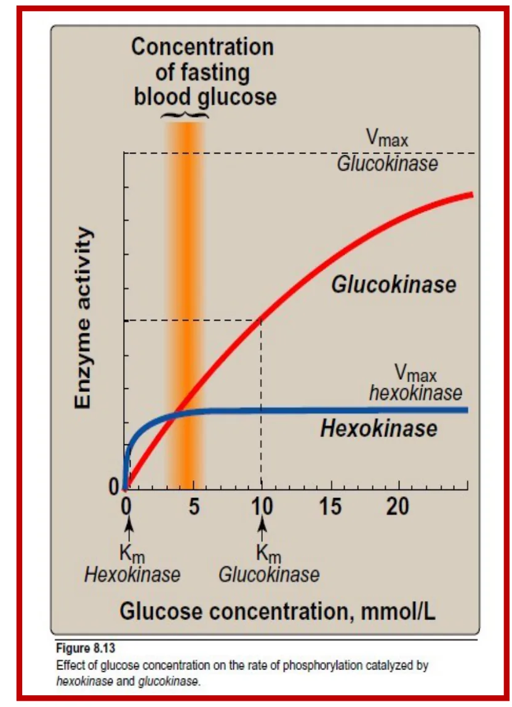
The sensor role is the first-order region put to work. A saturated enzyme reports nothing, because its rate is the same at 4 mM as at 9 mM. An enzyme working below its Km has a rate that rises and falls with glucose across exactly the range the body needs to discriminate, so the β cell can read its own metabolic rate as a proxy for blood glucose and set insulin release accordingly.
Temperature and pH
Both give bell curves because both destroy the enzyme at their extremes. Most human enzymes are optimal at 35–40 °C and begin to denature above 40 °C; the exception is the thermostable DNA polymerases used in PCR, from hot-spring organisms, with optima near 70 °C. The bell arises from two opposing effects overlapping: warming molecules gives more of them the energy to clear the barrier, which pushes the rate up, while warming the protein also loosens the folded structure that holds the active site in shape. The first effect wins until it doesn't, and the peak is the crossover.
pH works differently despite producing the same shape. It changes the ionization of amino acid side chains, so a group that must be protonated to grip substrate or donate a proton is deprotonated as pH rises, and activity falls away. Extremes of pH denature the enzyme outright. Most human enzymes are optimal near pH 7.4, but an enzyme's optimum generally matches the compartment it works in — which is why the list below is really a list of locations.
| Enzyme | Optimum pH | Where it works |
|---|---|---|
| Pepsin | 1–2 | Stomach lumen |
| Acid phosphatase | 4–5 | Lysosome, prostate |
| Trypsin | 5–7 | Small intestine (its true peak lies at the alkaline end of that range) |
| Alkaline phosphatase | 9–10 | Bone, biliary epithelium |
Objective 4 / Competitive, noncompetitive and suicide inhibition
An inhibitor is any compound that lowers the velocity of an enzyme-catalyzed reaction by binding to the enzyme — never to the substrate and never to the product. One structural fact sorts them: reversible inhibitors attach non-covalently, irreversible inhibitors attach covalently. That single difference decides whether the enzyme molecule survives the encounter, and everything else about the three types follows from where the inhibitor sits and whether it lets go.
What each inhibitor is actually doing
| CompetitiveThe inhibitor is a structural analog of the substrate. Because both need the same site, an ESI complex never forms — the enzyme has bound S or I, and the two states are mutually exclusive. | NoncompetitiveThe inhibitor has no structural resemblance to the substrate. It has its own site, so an ESI complex does form — substrate and inhibitor sit on the enzyme together, and no product comes out. |
Because a competitive inhibitor and the substrate contest a single site, which of the two an enzyme molecule is holding comes down to relative numbers. Enough substrate always wins that contest back and the reaction can still reach its original ceiling; what the inhibitor costs is the amount of substrate needed to get halfway there. Nothing has happened to the enzyme's intrinsic grip on substrate — the true Km is unchanged — which is why the measured value is called an apparent Km: it is the concentration you must now supply to reach half-maximal rate against competition.
A noncompetitive inhibitor does not interfere with substrate binding at all, so the enzyme's grip on substrate is exactly what it always was. What falls is the number of enzyme molecules able to complete a catalytic cycle, and flooding the system with substrate cannot revive them — extra substrate only pushes harder on a door that is bolted for a different reason.
An irreversible inhibitor forms a covalent bond at the active site, permanently subtracting that molecule from the pool of active enzyme, [Et]. A suicide inhibitor is the refined case: the enzyme itself converts the compound into the reactive species that then destroys it, which is what makes such drugs so selective — only an enzyme that performs the relevant chemistry can activate its own poison. Since the ceiling velocity depends on how much enzyme is present, losing enzyme lowers the ceiling, while the survivors are ordinary enzyme with an ordinary grip on substrate. A question has to tell you the bond is covalent, because the kinetics will not.
| NoncompetitiveThe enzyme molecule is occupied but structurally intact. Remove or dilute the inhibitor and full activity returns; [Et] never actually changed. | Irreversible / suicideThe enzyme molecule is destroyed. [Et] falls permanently and activity can only be restored by synthesizing new enzyme. |
The three differ along four dimensions, and a question will hand you one and expect the other three. The last column is what an exam is most likely to show you instead of state.
| Type | Binds at | Km (apparent) | Vmax (apparent) | Overcome by ↑[S]? | Lineweaver-Burk signature |
|---|---|---|---|---|---|
| ★ Competitive | Active site | Increased | Unchanged | Yes | Lines share the y-intercept (1/Vmax); the x-intercept moves toward zero |
| ★ Noncompetitive | Another site | Unchanged | Decreased | No | Lines share the x-intercept (−1/Km); the y-intercept rises |
| ★ Irreversible / suicide | Active site, covalently | Unchanged | Decreased | No — the bond is covalent | Identical to noncompetitive |
The two signatures in the last column need not be learned separately; they fall out of the intercept expressions given with the double-reciprocal plot above. Ask which parameter is absent from each intercept. An agent that moves only the parameter an intercept does not contain cannot move that intercept — and an intercept that cannot move is the point every line in the family must pass through. That is the entire origin of a shared intercept, and it lets you predict which one to expect before you look at the plot.
One thing is true of all three: the inhibited line on a Lineweaver-Burk plot always lies above the control line, because every inhibitor lowers v and therefore raises 1/v.
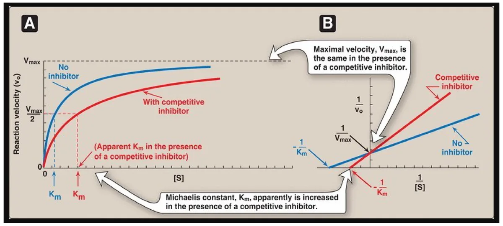
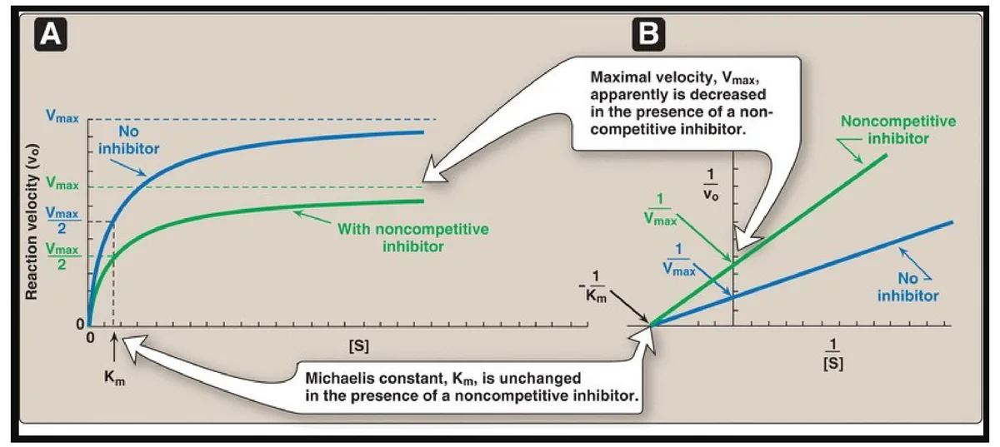
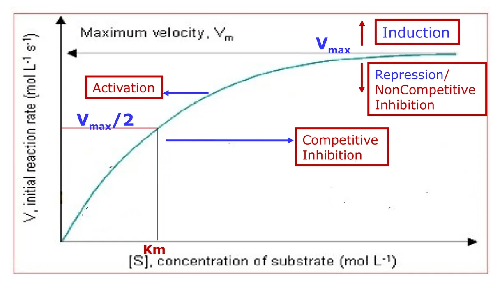
The drugs and poisons that work this way
| Mechanism | Agent | Target enzyme | Consequence |
|---|---|---|---|
| Competitive | Statins — lovastatin, simvastatin, pravastatin | HMG-CoA reductase, the rate-limiting enzyme of cholesterol biosynthesis | Blocks hepatic cholesterol synthesis and lowers plasma cholesterol. The statin skeleton is a structural analog of HMG-CoA |
| Competitive | Methotrexate (MTX) | Dihydrofolate reductase (DHFR), which reduces dihydrofolate to tetrahydrofolate (THF) | Starves the cell of THF, which is needed for cell division — hence its use in chemotherapy and in rheumatoid arthritis. MTX is a close structural analog of folate |
| Noncompetitive | Physostigmine | Acetylcholinesterase | Acetylcholine is not degraded, so cholinergic neurotransmission is prolonged |
| Irreversible | Aspirin | Cyclooxygenase-1 and -2, covalently acetylated | Prostaglandin synthesis stops — the analgesic and anti-inflammatory effect |
| Irreversible | Disulfiram (Antabuse) | Acetaldehyde dehydrogenase | Acetaldehyde accumulates after a drink and the patient feels acutely ill — a learned aversion used in the treatment of chronic alcoholism |
| Irreversible | Cyanide · nerve gas · organophosphates | Various | The poison end of the same mechanism |
The competitive entries share a design logic that makes them easy to reconstruct: build a molecule that looks like the substrate of the step you want to block, and the enzyme will pick it up by mistake. That also predicts their clinical weakness — because substrate can outcompete them, their effect depends on maintaining drug concentration, and a rising substrate level erodes it. The irreversible agents have the opposite profile. Their effect outlasts the drug in the bloodstream, since recovery waits on synthesis of new enzyme, which is why a single dose of aspirin suppresses platelet cyclooxygenase for the life of the platelet.
Objective 5 / Allosteric modulation of enzyme activity
Why allosteric enzymes need their own rules
An allosteric enzyme is multimeric — built from several subunits — and carries a regulatory site distinct from the catalytic site, sometimes on a subunit that does no catalysis at all. A small molecule binding there produces a conformational change transmitted through the bulk of the protein to the active sites.
The subunits are physically coupled, so none of them can change shape alone. That coupling is what bends the curve. At low substrate the whole assembly sits in its low-affinity shape and takes up substrate reluctantly, so the rate climbs sluggishly at first. Once a few sites are occupied, the assembly flips towards its high-affinity shape and the remaining sites bind far more readily — the rate now accelerates for each increment of substrate rather than merely rising. Then saturation arrives and flattens it as it would for any enzyme. Sluggish, then accelerating, then flat, is an S. Hemoglobin binds oxygen by the same mechanism and for the same reason.
Allosteric enzymes frequently catalyze the committed step of a pathway — the first irreversible step after a branch point. Putting the switch there is the efficient choice: control the entrance and you control flux through everything downstream, without having committed carbon to a pathway you are about to shut. A conformational switch that can be flipped by a passing metabolite is exactly the right hardware for that job.
| Michaelis-Menten (non-allosteric)Plot of v against [S] is hyperbolic. Active sites act independently. | AllostericPlot of v against [S] is sigmoidal. Subunits cooperate, so binding at one site alters the others. |
| Half-saturation is described by Km. | Has no Km. The half-saturation point is reported as K0.5 or S0.5, because the sigmoid does not obey the Michaelis-Menten equation. |
The missing Km is a consequence, not a convention. Km was derived on the assumption that each active site behaves independently of every other — that is what allowed a single ES complex to stand for the whole population. Cooperativity breaks that assumption outright, so the constant it produced no longer describes anything real. A half-saturation point can still be measured, hence K0.5, but it is an observation rather than a term in an equation.
Effectors, and the two things they can change
The small regulatory molecules that bind allosteric enzymes are allosteric effectors or modulators. They bind non-covalently and away from the catalytic site, and they come in both signs: positive effectors (activators) raise activity, negative effectors (inhibitors) lower it. When the effector is the enzyme's own substrate the effect is called homotropic — that is the cooperativity above; when it is some other molecule it is heterotropic, the case in feedback inhibition, where the end product of a pathway shuts down an enzyme several steps upstream.
| K-typeAlters the enzyme's affinity for substrate — K0.5 moves left (activator) or right (inhibitor). Vmax is unchanged. | V-typeAlters the enzyme's catalytic activity — Vmax moves up (activator) or down (inhibitor). K0.5 is unchanged. |
The two labels map onto the same horizontal-versus-vertical test used on hyperbolic curves, so nothing new has to be learned to read the graphs — only the name of the constant on the x-axis has changed.
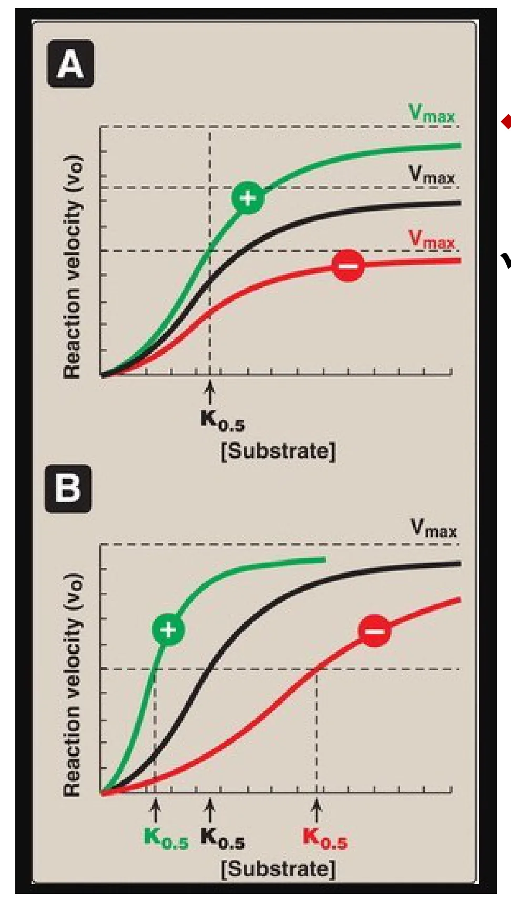
Allosteric regulation of glycogen metabolism
| Enzyme | Positive effectors | Negative effectors |
|---|---|---|
| Glycogen phosphorylase glycogen → glucose-1-phosphate | AMP, Ca2+ (muscle) | ATP, glucose, glucose-6-phosphate |
| Glycogen synthase glucose-1-phosphate → glycogen | Glucose-6-phosphate | — |
The signs above are deducible rather than memorizable, and the same logic works on every pathway you will meet. Read what the pathway is for: muscle degrades glycogen to make ATP, so a signal that ATP is short, or that the muscle is contracting, switches degradation on, and ATP itself switches it off. Then read the traffic: a pathway's entry molecule activates the enzyme that consumes it, and its products inhibit the enzyme that made them.
One entry in the table looks self-contradictory until you notice which side of the fork it sits on. Glucose-6-phosphate inhibits phosphorylase and activates synthase because it is the product of breakdown and the raw material for storage. One molecule, two roles, sign assigned by direction of travel.
Allosteric regulation is one of the short-term mechanisms — with substrate concentration, product inhibition, proenzyme activation and reversible covalent modification — which act on enzyme molecules that already exist. Long-term regulation changes enzyme quantity instead, by induction, repression or degradation through the ubiquitin–proteasome and lysosomal pathways; compartmentalization changes enzyme location. All are developed in Lecture 01.
Self-test / Recall drill
Answers are hidden on screen. Use Show answer per item, or Reveal all in the rail. Printing or saving as PDF shows every answer. Drill the inhibition grid and the graph-reading items hardest — they are where the marks are.
-
Define enzyme, substrate and product; name the one class of biological catalyst that is not protein; and say by what factor enzymes accelerate reactions and what two things besides speed they provide.A biocatalyst that speeds a reaction without itself being changed, converting substrate into product per unit time. Substrate = the molecule transformed, product = the result. Ribozymes are catalytic RNA — the exception to "enzymes are protein." Acceleration is 103–108-fold; enzymes also supply specificity and a point of regulatory control.
-
What is the active site, and what does "induced fit" add to the older lock-and-key picture?A pocket formed by protein folding, lined with side chains that bind substrate and carry out catalysis. Induced fit says binding is not passive: substrate triggers a conformational change that closes the site around it and aligns the catalytic groups.
-
Define apoenzyme, holoenzyme, cofactor and coenzyme; say which one is inactive; and name two metalloenzymes with their metals.Apoenzyme = the protein part alone, and the inactive one. Holoenzyme = apoenzyme + non-protein part, catalytically active. Cofactor = inorganic, a metal ion. Coenzyme = organic, usually vitamin-derived. Carbonic anhydrase requires Zn2+; lysyl oxidase requires Cu2+, and both it and the copper are essential for collagen processing.
-
NAD+ vs FAD: which is a cosubstrate and which a prosthetic group, what is the criterion, and which vitamin does each come from?NAD+ is a cosubstrate — it associates transiently and dissociates in an altered state; from niacin (B3). FAD is a prosthetic group — permanently associated, returned to its original state on the enzyme; from riboflavin (B2). Coenzyme A is another cosubstrate, biotin another prosthetic group.
-
Define the free energy of activation, explain why lowering it makes a reaction faster, and say what happens to ΔG, ΔG°′ and Keq.The energy difference between reactants and the high-energy transition-state intermediate. Only molecules carrying that much energy can react, so lowering the barrier qualifies a far larger fraction and the rate rises. ΔG, ΔG°′ and Keq are untouched — the enzyme accelerates forward and reverse equally and changes only the rate at which equilibrium is reached, never its position.
-
In the diagram below, which arrow represents the change in free energy for the catalyzed conversion S → P?
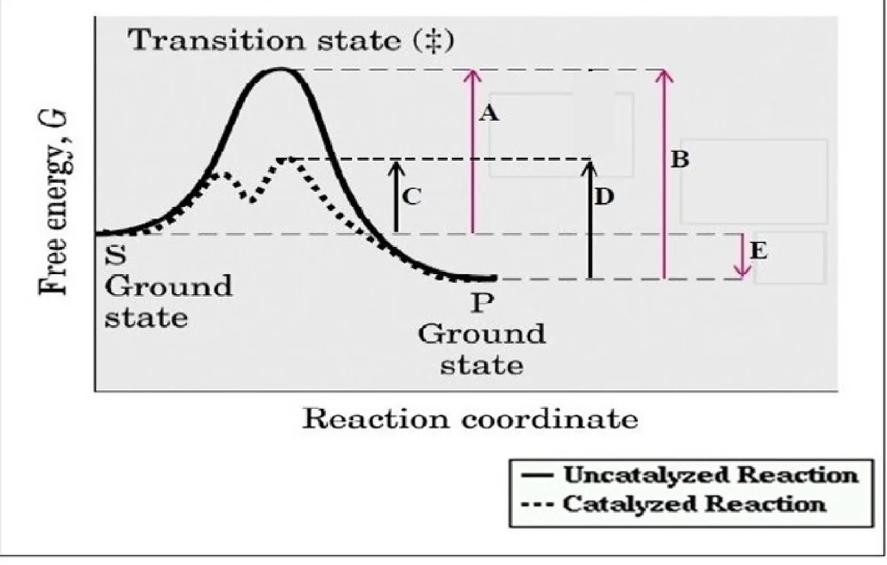
E — the only arrow spanning the S ground state to the P ground state. All the others run from a ground state up to a transition-state peak and are therefore activation energies, not ΔG. E would be exactly the same arrow for the uncatalyzed reaction. -
Name the six enzyme classes in EC order, and distinguish a hydrolase from a lyase with an example of each.1 oxidoreductase, 2 transferase, 3 hydrolase, 4 lyase, 5 isomerase, 6 ligase. A hydrolase cleaves a bond by adding water (urease); a lyase cleaves C–C, C–S or C–N bonds without water, often generating a double bond (pyruvate decarboxylase).
-
Hexokinase catalyzes glucose + ATP → glucose-6-phosphate + ADP. Which EC class, and why is it not a ligase?Transferase (class 2). A ligase joins two molecules into one and pays for it by hydrolyzing a high-energy phosphate; a kinase transfers the phosphoryl group of ATP itself, which is a group transfer. The presence of ATP in a reaction does not make an enzyme a ligase.
-
Where do the enzymes measured in serum come from in a healthy person, what does an elevated level mean, and which is more liver-specific — ALT or AST?Normal cell turnover, with release balanced by clearance, so levels are stable. A rise above the reference range means tissue damage, and the degree of elevation tracks its extent. ALT is more liver-specific, being concentrated in hepatocytes, whereas AST is also in heart and skeletal muscle. ALT rising with bilirubin = hepatocellular jaundice, the picture in mushroom poisoning.
-
Match to the enzyme: acute pancreatitis; Wilson disease; metastatic prostate carcinoma; obstructive liver disease.Amylase and lipase; ceruloplasmin; acid phosphatase; alkaline phosphatase (also bone disorders).
-
Define an isoenzyme, say why electrophoresis separates them and toward which electrode they migrate, and give the subunits and tissue for CK-1, CK-2 and CK-3.Physically distinct forms of an enzyme catalyzing the same reaction, differing in sequence and tissue distribution. Different sequences mean different numbers of charged residues, hence different mobility; all are net negative, so all migrate to the anode (+), at different rates. CK-1 = BB, brain; CK-2 = MB, cardiac muscle; CK-3 = MM, skeletal muscle. Myocardium is the only tissue with more than 5% of its CK as MB, which makes a rise in MB over total CK virtually specific for infarction.
-
A patient's serum shows LDH-1 > LDH-2. What does that indicate, which LDH rises in liver injury, and what artefact must be excluded?Myocardial infarction — the normal pattern is LDH-2 > LDH-1, and the flip is the finding. Liver injury raises LDH-5 (MMMM). Haemolysis releases LDH from red cells and falsely elevates the result, so samples must be handled carefully.
-
Give the time courses of CK-MB and cardiac troponin after an infarct, and say which is now standard and why.CK-MB: appears at 4–8 hours, peaks at ~24 hours, back to baseline by 48–72 hours. Troponin T or I: appears at 4–6 hours, peaks at 8–28 hours, stays elevated 3–10 days. Troponin is more sensitive and more specific and is now the standard, but CK-MB's short tail still helps detect re-infarction.
-
Write the Michaelis-Menten reaction model, say what velocity is proportional to, give the three assumptions behind the equation, and express Km in rate constants.E + S ⇌ ES → E + P, with v = k3[ES] — velocity is proportional to [ES]. Assumptions: [S] ≫ [E]; steady state, so [ES] is constant in time; initial velocities only, so no product has accumulated and both the reverse reaction and product inhibition can be ignored. Km = (k2 + k3)/k1 — breakdown over formation of ES, which is why a high Km means low affinity: the enzyme loses substrate faster than it captures it.
-
State the Michaelis-Menten equation and define Km from it.vo = Vmax[S]/(Km + [S]). Km is the substrate concentration at which v = ½Vmax — substitute [S] = Km and the equation gives v = Vmax/2.
-
Which parameter varies with enzyme concentration and which does not — and what is Vmax equal to?Vmax is directly proportional to [E]; halve the enzyme and Vmax halves. Km does not vary with [E] at all. Vmax = kcat × [Et].
-
Give the Lineweaver-Burk equation and its three readable features, and say why the transform is worth doing and what it costs.1/v = (Km/Vmax)(1/[S]) + 1/Vmax; y-intercept = 1/Vmax, x-intercept = −1/Km, slope = Km/Vmax. Worth doing because the hyperbola approaches Vmax asymptotically and neither parameter reads off it accurately, whereas a straight line extrapolates. The cost: reciprocals magnify error, so a small measurement error becomes a large error in the constants.
-
A double-reciprocal plot has a y-intercept of 0.04 (min·µM−1) and an x-intercept of −0.5 mM−1. Give Vmax and Km.Vmax = 1/0.04 = 25 µM/min. Km = −1/(−0.5) = 2 mM. Both intercepts are reciprocals, so a bigger intercept means a smaller parameter.
-
Define kcat and specific activity, and say what each is used for.kcat, the turnover number, is moles of product per second per mole of catalytic centre — a property of the molecule regardless of how much is present. Specific activity is units per mg protein, a measure of purity. A unit is the amount of enzyme forming a stated quantity of product per unit time, e.g. µmol/min.
-
Name the five factors that affect enzyme activity and the plot shape each produces, and say why the enzyme-concentration plot is clinically useful.Substrate concentration — hyperbola. Enzyme concentration — straight line through the origin. Temperature — bell curve. pH — bell curve. Activators/inhibitors — the curve shifts. Because initial velocity is proportional to the amount of enzyme, measuring a rate tells you how much enzyme is in a plasma, serum or tissue sample — the basis of diagnostic enzyme assays.
-
What does the Michaelis-Menten equation reduce to when [S] ≪ Km and when [S] ≫ Km, what is each region called, and which glucose transporter goes with each?[S] ≪ Km: Km + [S] ≈ Km, so v = Vmax[S]/Km — velocity proportional to [S], first order — GLUT2, liver and pancreas. [S] ≫ Km: Km + [S] ≈ [S], so v = Vmax — velocity independent of [S], zero order — GLUT1 and GLUT3, brain and red cells. Around [S] ≈ Km the reaction is mixed order.
-
Hexokinase in red cells has a Km of 0.1 mM for glucose; plasma glucose is 5 mM. Which is true — it is at 50% of Vmax, 50% saturated, doubled by raising glucose to 10 mM, at 100% of Vmax, or slowed by dropping glucose to 3 mM?It is operating at 100% of Vmax. [S] is 50× Km, so the enzyme is saturated and in the zero-order region; changing glucose between 3 and 10 mM does nothing. No calculation needed — just compare [S] with Km. (Strictly v = 5/5.1 = 98% of Vmax; the intended reading is "effectively maximal.")
-
Contrast hexokinase and glucokinase on Km, Vmax, tissue and transporter, and give both Km values.Hexokinase: low Km ≈0.05 mM (high affinity), low Vmax, most tissues including brain and red cells, GLUT1/3. Glucokinase: high Km ≈10 mM (low affinity), high Vmax, liver and pancreatic islets, GLUT2.
-
Why must glucokinase have a Km above the normal blood glucose concentration, and what second job does that fit it for?Normal circulating glucose is ≈5 mM, below its Km, so the liver does not trap all the glucose passing through and can instead release glucose into the blood — one of its main functions. The same property makes glucokinase the glucose sensor of pancreatic islet cells, setting the threshold for insulin secretion, because its rate tracks blood glucose across the physiological range instead of being saturated by it.
-
Give the optimum temperature and pH for most human enzymes, one exception, and the pH optima of pepsin, acid phosphatase, trypsin and alkaline phosphatase.35–40 °C and ≈7.4. The thermostable DNA polymerases used in PCR are the temperature exception, near 70 °C. Pepsin 1–2, acid phosphatase 4–5, trypsin 5–7, alkaline phosphatase 9–10. pH acts by changing side-chain ionization; extremes denature the enzyme.
-
What does an inhibitor bind to, and what single structural feature separates reversible from irreversible inhibition?The enzyme — never the substrate, never the product. Reversible inhibitors bind non-covalently; irreversible inhibitors bind covalently.
-
Give the effect of a competitive inhibitor on Km and Vmax, whether excess substrate rescues it and why, and say which inhibition type forms an ESI complex.Km increases, Vmax is unchanged, and yes: the inhibitor is a structural analog competing for the same active site, so enough substrate wins the contest and the original ceiling is still reachable — it just takes more substrate to reach half of it. Competitive inhibition never forms an ESI complex, since both molecules need the same site; noncompetitive does, and the complex makes no product.
-
A noncompetitive inhibitor of an enzyme does which of: increases Km with no change in Vmax; decreases both; decreases Vmax; increases Vmax; increases both?Decreases Vmax, with Km unchanged. "Increases Km with no change in Vmax" is competitive inhibition; any option raising Vmax is a throwaway, since no inhibitor increases Vmax.
-
Why is suicide inhibition kinetically identical to noncompetitive inhibition, and what tells them apart?Both reduce the number of enzyme molecules able to complete a cycle, so Vmax falls while the survivors bind substrate normally and Km is unchanged. Only the bond differs: covalent and permanent, lowering [Et], versus non-covalent and reversible on dilution with [Et] intact. The graph cannot tell you; the stem must.
-
Two Lineweaver-Burk lines intersect on the y-axis; a second pair intersects on the x-axis. Identify each and say which parameter changed.Shared y-intercept = competitive: 1/Vmax and therefore Vmax is unchanged, and the differing x-intercepts mean Km increased. Shared x-intercept = noncompetitive or irreversible/suicide: −1/Km and therefore Km is unchanged, and the differing y-intercepts mean Vmax decreased. Either way the inhibited line lies above the control line.
-
Methotrexate competitively inhibits dihydrofolate reductase. Rates were measured with 10 nM enzyme, dihydrofolate from 1–500 µM, and 0, 5 or 20 nM methotrexate. Which plot below is the expected outcome?
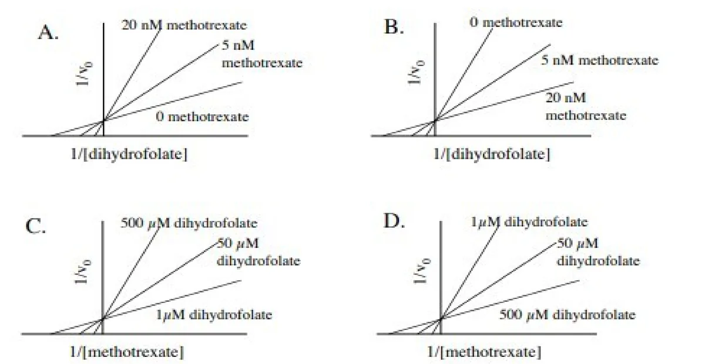
A. Two things must be right. The axes: the varied substrate is dihydrofolate, so the x-axis must be 1/[dihydrofolate] — eliminating C and D, which plot against 1/[methotrexate]. Then the pattern: competitive inhibition gives a shared y-intercept with slope rising as inhibitor rises, so the 20 nM line is steepest. B reverses the order, making more inhibitor look less inhibitory. -
Give the target enzyme and mechanism class for statins, methotrexate, physostigmine, aspirin and disulfiram.Statins — HMG-CoA reductase, rate-limiting for cholesterol synthesis; competitive; lowers plasma cholesterol. Methotrexate — dihydrofolate reductase; competitive; starves the cell of THF needed for cell division, hence chemotherapy and rheumatoid arthritis. Physostigmine — acetylcholinesterase; noncompetitive. Aspirin — COX-1 and -2; irreversible, blocking prostaglandin synthesis. Disulfiram — acetaldehyde dehydrogenase; irreversible, so acetaldehyde accumulates after alcohol. Cyanide, nerve gas and organophosphates are the poison end of the same mechanism.
-
A velocity curve shifts right; a second shifts down. Name the cause of each, and say why one of them is ambiguous.Right = Km increased = competitive inhibition (higher Km, lower affinity). Down = Vmax decreased = either repression, which makes less enzyme, or noncompetitive/irreversible inhibition, which disables existing enzyme. Both reduce the number of functioning molecules, so the curve alone cannot separate them. A left shift is activation, an upward shift is induction.
-
An enzyme's v versus [S] curve is sigmoidal. What can you immediately say about it?It is allosteric: multimeric, cooperative between subunits, does not obey Michaelis-Menten kinetics, has no Km — use K0.5 or S0.5 — and frequently catalyzes the committed step of its pathway.
-
Where does an allosteric effector bind, what does binding do, what is the difference between a homotropic and a heterotropic effector, and between a K-type and a V-type modulator?Non-covalently, at a regulatory site distinct from the catalytic site, sometimes on a non-catalytic subunit; binding causes a conformational change transmitted through the protein to the active sites. Homotropic: the effector is the substrate itself — that is cooperativity. Heterotropic: a different molecule, as in end-product feedback inhibition. K-type changes affinity — K0.5 moves, Vmax stays. V-type changes catalytic activity — Vmax moves, K0.5 stays. Either can be positive or negative.
-
CTP was added to aspartate transcarbamoylase and the rate measured against aspartate, giving the curves below. Which is correct — CTP decreases Vmax; CTP increases the KM; CTP is a negative allosteric effector; CTP is a positive allosteric effector; CTP has no effect?
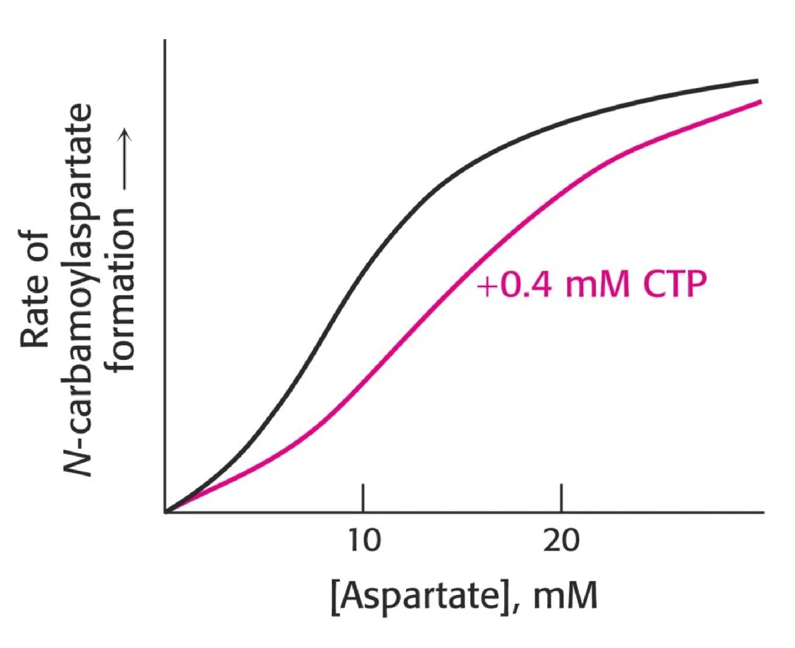
CTP acts as a negative allosteric effector. The curve is displaced right and downward, so activity falls at every aspartate concentration. "Decreases Vmax" is wrong because both curves are still climbing toward the same plateau. "Increases the KM" is the trap: the curve is sigmoidal, so this enzyme has no Km at all — the shift is in K0.5, making CTP a K-type negative effector. -
Give the positive and negative allosteric effectors of glycogen phosphorylase and glycogen synthase, and the reasoning that generates them.Phosphorylase: positive AMP and Ca2+ in muscle; negative ATP, glucose and glucose-6-phosphate. Synthase: positive glucose-6-phosphate. The reasoning is the pathway's purpose — muscle breaks glycogen down to make ATP, so a signal that ATP is short (AMP) or that the muscle is contracting (Ca2+) turns it on and ATP turns it off; G6P is the entry molecule for synthesis, so it turns synthesis on.
-
Which regulatory mechanisms act on enzyme molecules that already exist, and which change how many there are?Acting on existing enzyme (short term): substrate concentration, product inhibition, proenzyme activation, reversible covalent modification, allosteric regulation. Changing the amount (long term): induction, repression, and degradation via the ubiquitin–proteasome and lysosomal pathways. Compartmentalization changes location rather than either.
Rapid review / Keyword sheet
Bold = highest-yield. If you review one page, review this one.
| Competitive | Noncompetitive | Irreversible / suicide | |
|---|---|---|---|
| Binds at | Active site | Other site | Active site, covalent |
| Km | ↑ Increased | Unchanged | Unchanged |
| Vmax | Unchanged | ↓ Decreased | ↓ Decreased |
| Overcome by ↑[S]? | YES | No | No |
| Lineweaver-Burk | Shared y-intercept | Shared x-intercept | Shared x-intercept |
| Hyperbola moves | Right | Down | Down |
| ESI complex | Never | Yes — inactive | — |
Definitions
- Enzyme = biocatalyst, unchanged by the reaction; 103–108× faster
- Protein — except ribozymes (RNA)
- Active site = binding + catalytic residues; induced fit
- Holoenzyme = apoenzyme + non-protein part; apoenzyme alone is INACTIVE
- Cofactor = inorganic (metal) → metalloenzyme
- Coenzyme = organic, vitamin-derived
- Cosubstrate — transient, leaves ALTERED: NAD+, CoA
- Prosthetic group — permanent, returns to ORIGINAL: FAD, biotin
- NAD+ ← niacin B3 · FAD ← riboflavin B2
- Carbonic anhydrase — Zn2+ · Lysyl oxidase — Cu2+
Energetics
- Ea = reactants → transition state T*
- Enzymes lower Ea by stabilizing T*
- NEVER change ΔG, ΔG°′, Keq, or the equilibrium position
- Only the rate at which equilibrium is reached; forward and reverse accelerated equally
Six classes — know the ORDER
- 1 Oxidoreductase — redox (LDH)
- 2 Transferase — group transfer (all kinases; hexokinase)
- 3 Hydrolase — cleaves with water (urease)
- 4 Lyase — cleaves without water (pyruvate decarboxylase)
- 5 Isomerase — rearrangement (methylmalonyl-CoA mutase)
- 6 Ligase — joins two, costs ATP (pyruvate carboxylase)
- ATP present ≠ ligase — a kinase transfers the phosphoryl group itself
Clinical enzymology
- Serum enzymes come from normal cell turnover; a rise = tissue damage, magnitude = extent
- ALT — most liver-specific · AST — wider distribution
- ALT + bilirubin ↑ = hepatocellular jaundice (mushroom poisoning)
- Amylase, lipase — pancreatitis · Ceruloplasmin — Wilson
- Acid phosphatase — prostate · Alk phos — bone, obstructive liver · GGT — liver
- Isoenzymes: same reaction, different sequence → electrophoresis; all negative → migrate to anode (+)
CK and LDH
- CK is a dimer from 2 subunit types → 3 forms; LDH a tetramer → 5
- CK-1 BB brain · CK-2 MB heart · CK-3 MM skeletal
- Myocardium = only tissue >5% of CK as MB
- LDH-1 HHHH heart · LDH-2 HHHM normal · LDH-5 MMMM liver
- Normal LDH-2 > LDH-1; MI flips to LDH-1 > LDH-2
- CK-MB: 4–8 h → peak 24 h → normal 48–72 h
- Troponin T/I: 4–6 h → peak 8–28 h → elevated 3–10 days — now the standard
- Haemolysis falsely raises LDH
Michaelis-Menten
- E + S ⇌ ES → E + P · v = k3[ES]
- vo = Vmax[S] / (Km + [S])
- Km = (k2 + k3)/k1 — breakdown ÷ formation of ES
- Assumptions: [S] ≫ [E] · steady state · initial velocity (no product inhibition)
Km vs Vmax
- Km = [S] at ½Vmax — a CONCENTRATION
- LOW Km = HIGH affinity · HIGH Km = LOW affinity
- Km NEVER varies with [E]
- Vmax ∝ [E] · Vmax = kcat × [Et]
- kcat = turnover number = mol product/s per mol catalytic centre
- Specific activity = units/mg protein = purity
Lineweaver-Burk
- 1/v = (Km/Vmax)(1/[S]) + 1/Vmax
- y-int = 1/Vmax · x-int = −1/Km · slope = Km/Vmax
- Straightens the curve — but reciprocals magnify error
- The inhibitor line is ALWAYS above the control line
Order of reaction
- [S] ≪ Km → first order, v ∝ [S], v = Vmax[S]/Km → GLUT2, liver + pancreas
- [S] ≫ Km → zero order, v = Vmax → GLUT1 & 3, brain + RBC
- Around Km = mixed order
Other factors
- [E]: straight line through origin — the basis of serum enzyme assays
- Temperature: bell; optimum 35–40 °C; exception thermostable DNA polymerase (PCR)
- pH: bell; changes side-chain ionization; most ≈7.4
- Pepsin 1–2 · acid phosphatase 4–5 · trypsin 5–7 · alk phos 9–10
Hexokinase vs glucokinase
- HK: low Km ≈0.05 mM, low Vmax — brain, RBC, most tissues; GLUT1/3; high AFFINITY
- GK: high Km ≈10 mM, high Vmax — liver + pancreatic islets; GLUT2; high CAPACITY
- GK = β-cell glucose sensor, sets the insulin threshold
- Blood glucose ≈5 mM sits BELOW the GK Km → the liver can release glucose instead of trapping it
- Both: glucose + ATP → G6P, which traps glucose in the cell
Inhibition — the two questions
- ① Can excess substrate overcome it? Yes → competitive. No → Vmax falls
- ② Covalent? Yes → irreversible/suicide. No → reversible
- The inhibitor binds the ENZYME, never substrate or product
- Competitive = structural analog · Noncompetitive = no resemblance
- Suicide = the enzyme itself makes the reactive species that kills it
Inhibitor drugs
- Competitive: statins → HMG-CoA reductase (rate-limiting, cholesterol synthesis) · methotrexate → DHFR → ↓THF; chemo + rheumatoid arthritis
- Noncompetitive: physostigmine → acetylcholinesterase
- Irreversible: aspirin → COX-1/COX-2 → ↓prostaglandins · disulfiram → acetaldehyde dehydrogenase (Antabuse) · poisons: cyanide, nerve gas, organophosphates
Reading the curves
- Hyperbola → look for what CHANGED. Lineweaver-Burk → look for what is UNCHANGED.
- UP = Vmax↑ = induction
- DOWN = Vmax↓ = repression OR noncompetitive/irreversible — indistinguishable
- RIGHT = Km↑ = competitive inhibition
- LEFT = Km↓ = activation
- Procedure: y-axis → x-axis → shape → what moved
Allosteric enzymes
- Multimeric · committed step · SIGMOID curve · NO Km (use K0.5 / S0.5)
- Sigmoid comes from cooperativity between subunits — same as haemoglobin
- Hyperbolic = Michaelis-Menten/non-allosteric; sigmoid = allosteric
- Effectors: non-covalent, bind a site ≠ catalytic site, cause a conformational change; positive or negative
- Homotropic = the substrate itself · Heterotropic = a different molecule (feedback inhibition)
- K-type alters affinity (K0.5) · V-type alters catalytic activity (Vmax)
Allosteric examples
- Glycogen phosphorylase: − ATP, glucose, G6P · + AMP, Ca2+ (muscle)
- Glycogen synthase: + G6P
- ATCase: − CTP, a K-type negative effector (end-product feedback)
- Deduce the sign from the purpose of the pathway
Regulation — where this sits
- Short term (existing enzyme): [S] · product inhibition · proenzyme activation · reversible covalent modification · allosteric
- Long term (enzyme quantity): induction · repression · degradation (ubiquitin–proteasome, lysosomal)
- Compartmentalization = location
- Developed in Lecture 01